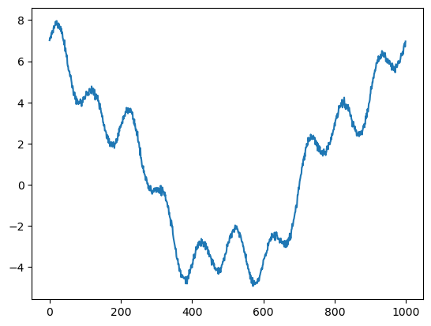
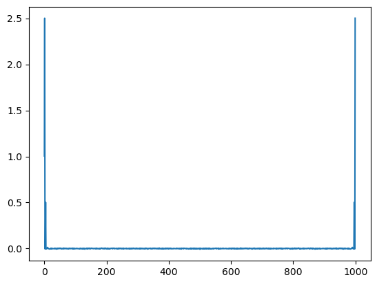

Discrete Fourier Transform#
import numpy as np
from matplotlib import pyplot as plt
def fourier(y, number_of_harmonics):
x = np.matrix(np.arange(0,np.size(y)))/np.size(y)*2*3.14159
#
#print(x)
n = np.matrix(np.arange(0,number_of_harmonics))
omega = x.T.dot(n)
cos_coef = np.matrix(y).dot(np.cos(omega))
sin_coef = np.matrix(y).dot(np.sin(omega))
cos_coef = cos_coef/np.size(y)*2
sin_coef = sin_coef/np.size(y)*2
cos_coef[0,0] = cos_coef[0,0]/2
reconstruct = cos_coef.dot(np.cos(omega).T)+sin_coef.dot(np.sin(omega).T)
return cos_coef,sin_coef, reconstruct, omega
x = np.linspace(0,2*3.14159,1000)
y = 1*np.cos(0*x)+5*np.cos(x)+np.cos(4*x)+np.sin(10*x)+np.random.normal(0,0.1,1000)
plt.plot(y)
wave_number = 100
cos_coef,sin_coef,reconstruct, omega = fourier(y,wave_number)
plt.figure()
plt.contourf(np.cos(omega))
# plt.scatter(np.arange(0,wave_number),np.array(cos_coef),s=40)
# plt.scatter(np.arange(0,wave_number),np.array(sin_coef),s=40)
plt.figure()
plt.plot(reconstruct[0,:].T)
plt.plot(y)
print('cos coef=',cos_coef)
print('sin coef=',sin_coef)
plt.figure()
plt.plot(cos_coef)
cos coef= [[ 1.00506891e+00 5.00224728e+00 -6.87613311e-03 8.56406483e-03
1.00414229e+00 -8.71530977e-03 -4.93162040e-03 -5.65046909e-03
3.20957028e-03 5.80515894e-03 2.61217738e-02 2.48248130e-03
5.69544248e-03 3.59553093e-03 -5.00370740e-03 -6.16067227e-03
-9.65956109e-03 -9.44371471e-03 -4.00811363e-03 -2.68750756e-03
1.43054305e-03 -4.43462714e-03 5.07544519e-03 -6.05469454e-03
4.77070253e-03 -4.61086708e-03 -1.64122969e-03 -1.39121520e-03
-3.31565655e-03 -1.74800527e-03 6.18214507e-04 2.03406781e-04
4.96746473e-03 -2.48975945e-03 5.56533885e-04 4.22859461e-03
-3.30348682e-03 -3.68135402e-04 -2.05174504e-03 -1.09851210e-02
3.28207073e-03 7.53018420e-04 -6.18219048e-03 1.07426461e-03
6.52486192e-03 3.06917052e-03 -2.60223039e-03 5.10488818e-03
6.00350407e-03 -6.89026998e-04 1.03768598e-02 5.61333471e-03
5.17749309e-03 -3.03991342e-03 -7.30036942e-03 2.25552474e-03
3.73539923e-04 -9.31840456e-04 -3.32357352e-03 -7.20979636e-03
2.91606201e-03 1.07129539e-02 -3.51919176e-03 6.07732569e-03
4.98220845e-03 -1.58133166e-03 2.47219433e-03 -1.97171243e-03
3.35609176e-04 4.87849349e-03 6.73602706e-03 -3.70776110e-03
-4.13978251e-03 -2.44951075e-03 2.57978955e-03 -2.73926236e-03
-2.24447364e-03 -5.25129650e-03 1.28231865e-03 -5.48744052e-03
-2.17570239e-04 2.92831968e-03 8.41491143e-03 1.06878166e-03
-3.30226408e-03 -2.28500136e-03 3.43892917e-03 4.55178862e-03
7.86035192e-04 -3.50156068e-03 -3.14080017e-03 8.24221379e-03
-2.11994243e-03 -5.29249388e-04 -7.83164510e-03 -6.81067277e-03
5.64190627e-03 -2.75006883e-03 -2.43755829e-03 -4.68140259e-04]]
sin coef= [[ 0.00000000e+00 -1.86996203e-02 4.28129236e-03 1.19493921e-03
-9.58792022e-03 3.53125103e-03 -8.40109484e-04 -3.27808338e-03
-1.26217434e-03 1.62470477e-02 1.00645231e+00 -1.49531833e-02
-3.82972479e-04 -9.05935397e-03 2.52630569e-03 4.06269139e-03
-5.53254848e-04 -4.46162217e-03 3.15048277e-03 -3.02435624e-03
-3.19517620e-03 -2.96915728e-03 7.20480252e-03 -6.24762060e-04
-5.20596291e-03 1.99922695e-03 -3.19192407e-03 1.66436824e-04
-1.00543110e-02 3.96211823e-03 8.82103795e-03 5.55622334e-03
-2.89354599e-04 -2.12038385e-03 -4.78589961e-03 3.97396968e-04
8.80518655e-04 7.86094975e-03 2.20236478e-03 -2.09522447e-03
-7.14533529e-03 6.23262419e-03 3.77985648e-03 -2.65534587e-03
6.86659367e-04 -3.64355893e-03 6.49590494e-04 -6.39943972e-03
-6.72673893e-04 1.03496337e-03 -3.68700177e-03 -6.52070431e-03
1.15389402e-03 4.51269703e-04 5.02809132e-03 -1.02032975e-02
-2.09743759e-03 2.09325754e-03 -7.65397997e-04 2.00870629e-03
4.57661215e-03 -1.29309892e-04 6.92123427e-03 -7.58942113e-03
-2.30979022e-03 -3.67930383e-03 -4.73428823e-03 6.13697986e-04
7.19105966e-03 5.96245418e-03 5.40009133e-04 4.64014174e-03
3.19171806e-03 4.47554032e-03 7.66027486e-04 4.78825246e-03
-1.72648672e-03 -6.79786475e-04 -7.64085546e-03 -3.04355800e-04
-1.53717082e-03 -5.89150999e-04 9.66174807e-04 -2.09468375e-03
-7.25906522e-03 8.31705946e-03 -3.90044298e-03 -6.43776561e-03
1.67955746e-03 1.53222198e-03 3.51611639e-03 -3.19325418e-03
-1.31298458e-03 -1.77033882e-03 -4.30774280e-03 -6.99533344e-03
1.11679343e-03 1.08250643e-03 7.74350832e-04 5.45609750e-03]]
[<matplotlib.lines.Line2D at 0x120b6bc70>,
<matplotlib.lines.Line2D at 0x120b6bd90>,
<matplotlib.lines.Line2D at 0x120b6beb0>,
<matplotlib.lines.Line2D at 0x120b6bfd0>,
<matplotlib.lines.Line2D at 0x120b6bc10>,
<matplotlib.lines.Line2D at 0x120b78250>,
<matplotlib.lines.Line2D at 0x120b78370>,
<matplotlib.lines.Line2D at 0x120b78490>,
<matplotlib.lines.Line2D at 0x120b785b0>,
<matplotlib.lines.Line2D at 0x120b786d0>,
<matplotlib.lines.Line2D at 0x120b787f0>,
<matplotlib.lines.Line2D at 0x120b78910>,
<matplotlib.lines.Line2D at 0x120b78a30>,
<matplotlib.lines.Line2D at 0x120b78b50>,
<matplotlib.lines.Line2D at 0x120b78c70>,
<matplotlib.lines.Line2D at 0x120b78d90>,
<matplotlib.lines.Line2D at 0x120b78eb0>,
<matplotlib.lines.Line2D at 0x120b78fd0>,
<matplotlib.lines.Line2D at 0x120b78130>,
<matplotlib.lines.Line2D at 0x120b7e250>,
<matplotlib.lines.Line2D at 0x120b7e370>,
<matplotlib.lines.Line2D at 0x120b7e490>,
<matplotlib.lines.Line2D at 0x120b7e5b0>,
<matplotlib.lines.Line2D at 0x120b7e6d0>,
<matplotlib.lines.Line2D at 0x120b7e7f0>,
<matplotlib.lines.Line2D at 0x120b7e910>,
<matplotlib.lines.Line2D at 0x120b7ea30>,
<matplotlib.lines.Line2D at 0x120b7eb50>,
<matplotlib.lines.Line2D at 0x120b7ec70>,
<matplotlib.lines.Line2D at 0x120b7ed90>,
<matplotlib.lines.Line2D at 0x120b7eeb0>,
<matplotlib.lines.Line2D at 0x120b7efd0>,
<matplotlib.lines.Line2D at 0x120b7e130>,
<matplotlib.lines.Line2D at 0x120cae250>,
<matplotlib.lines.Line2D at 0x120cae370>,
<matplotlib.lines.Line2D at 0x120cae490>,
<matplotlib.lines.Line2D at 0x120cae580>,
<matplotlib.lines.Line2D at 0x120cae6a0>,
<matplotlib.lines.Line2D at 0x120cae7c0>,
<matplotlib.lines.Line2D at 0x120cae8e0>,
<matplotlib.lines.Line2D at 0x120caea00>,
<matplotlib.lines.Line2D at 0x120caeb20>,
<matplotlib.lines.Line2D at 0x120caec40>,
<matplotlib.lines.Line2D at 0x120caed60>,
<matplotlib.lines.Line2D at 0x120caee80>,
<matplotlib.lines.Line2D at 0x120b5dc10>,
<matplotlib.lines.Line2D at 0x120b5dbe0>,
<matplotlib.lines.Line2D at 0x120caefa0>,
<matplotlib.lines.Line2D at 0x120cb5220>,
<matplotlib.lines.Line2D at 0x120cb5340>,
<matplotlib.lines.Line2D at 0x120cb5460>,
<matplotlib.lines.Line2D at 0x120cb5580>,
<matplotlib.lines.Line2D at 0x120cb56a0>,
<matplotlib.lines.Line2D at 0x120cb57c0>,
<matplotlib.lines.Line2D at 0x120cb58e0>,
<matplotlib.lines.Line2D at 0x120cb5a00>,
<matplotlib.lines.Line2D at 0x120cb5b20>,
<matplotlib.lines.Line2D at 0x120cb5c40>,
<matplotlib.lines.Line2D at 0x120cb5d60>,
<matplotlib.lines.Line2D at 0x120cb5e80>,
<matplotlib.lines.Line2D at 0x120cb5fa0>,
<matplotlib.lines.Line2D at 0x120cb5100>,
<matplotlib.lines.Line2D at 0x120cbf220>,
<matplotlib.lines.Line2D at 0x120cbf340>,
<matplotlib.lines.Line2D at 0x120cbf460>,
<matplotlib.lines.Line2D at 0x120cbf580>,
<matplotlib.lines.Line2D at 0x120cbf6a0>,
<matplotlib.lines.Line2D at 0x120cbf7c0>,
<matplotlib.lines.Line2D at 0x120cbf8e0>,
<matplotlib.lines.Line2D at 0x120cbfa00>,
<matplotlib.lines.Line2D at 0x120cbfb20>,
<matplotlib.lines.Line2D at 0x120cbfc40>,
<matplotlib.lines.Line2D at 0x120cbfd60>,
<matplotlib.lines.Line2D at 0x120cbfe80>,
<matplotlib.lines.Line2D at 0x120cbffa0>,
<matplotlib.lines.Line2D at 0x120cbf100>,
<matplotlib.lines.Line2D at 0x120cc5220>,
<matplotlib.lines.Line2D at 0x120cc5340>,
<matplotlib.lines.Line2D at 0x120cc5460>,
<matplotlib.lines.Line2D at 0x120cc5580>,
<matplotlib.lines.Line2D at 0x120cc56a0>,
<matplotlib.lines.Line2D at 0x120cc57c0>,
<matplotlib.lines.Line2D at 0x120cc58e0>,
<matplotlib.lines.Line2D at 0x120cc5a00>,
<matplotlib.lines.Line2D at 0x120cc5b20>,
<matplotlib.lines.Line2D at 0x120cc5c40>,
<matplotlib.lines.Line2D at 0x120cc5d60>,
<matplotlib.lines.Line2D at 0x120cc5e80>,
<matplotlib.lines.Line2D at 0x120cc5fa0>,
<matplotlib.lines.Line2D at 0x120cc5100>,
<matplotlib.lines.Line2D at 0x120cca220>,
<matplotlib.lines.Line2D at 0x120cca340>,
<matplotlib.lines.Line2D at 0x120cca460>,
<matplotlib.lines.Line2D at 0x120cca580>,
<matplotlib.lines.Line2D at 0x120cca6a0>,
<matplotlib.lines.Line2D at 0x120cca7c0>,
<matplotlib.lines.Line2D at 0x120cca8e0>,
<matplotlib.lines.Line2D at 0x120ccaa00>,
<matplotlib.lines.Line2D at 0x120ccab20>,
<matplotlib.lines.Line2D at 0x120ccac40>]


def dft(y):
y = np.asarray(y, dtype=float)
N = y.shape[0]
n = np.arange(N)
k = n.reshape((N, 1))
M = np.exp(-2j * np.pi * k * n / N)
return np.dot(M, y)/np.size(y)
plt.plot(dft(y))
y_hat = np.matrix(dft(y))
print(y_hat.dot((y_hat.conjugate()).T))
print(np.var(y))
[[14.54255657+0.j]]
13.532393058157956
/Users/Shared/miniconda3/envs/jupyterbook/lib/python3.9/site-packages/matplotlib/cbook.py:1762: ComplexWarning: Casting complex values to real discards the imaginary part
return math.isfinite(val)
/Users/Shared/miniconda3/envs/jupyterbook/lib/python3.9/site-packages/matplotlib/cbook.py:1398: ComplexWarning: Casting complex values to real discards the imaginary part
return np.asarray(x, float)

Gibbs phenomenon#
y = np.cos(0*x)+5*np.cos(x)+np.cos(4*x)+np.sin(10*x)
plt.plot(dft(y)[0:10],'k')
# maskout the data by half
y[0:500] = 0
plt.plot(dft(y)[0:10]*2)
[<matplotlib.lines.Line2D at 0x121ccee80>]

Fast Fourier Transform#
import numpy as np
def fft(x):
N = len(x)
if N <= 1:
return x
even = fft(x[0::2])
odd = fft(x[1::2])
T = [np.exp(-2j * np.pi * k / N) * odd[k] for k in range(N // 2)]
return [even[k] + T[k] for k in range(N // 2)] + \
[even[k] - T[k] for k in range(N // 2)]
def fft_recursive(x):
N = len(x)
if N % 2 > 0:
raise ValueError("Length of input must be a power of 2")
elif N <= 32:
return fft(x)
else:
even = fft_recursive(x[0::2])
odd = fft_recursive(x[1::2])
T = [np.exp(-2j * np.pi * k / N) * odd[k] for k in range(N // 2)]
return [even[k] + T[k] for k in range(N // 2)] + \
[even[k] - T[k] for k in range(N // 2)]
def main():
x = np.random.random(1024)
#print("Input sequence:", x)
y = fft_recursive(x)
#print("FFT result:", y)
if __name__ == "__main__":
main()
def FFT(x):
"""
A recursive implementation of
the 1D Cooley-Tukey FFT, the
input should have a length of
power of 2.
"""
N = len(x)
if N == 1:
return x
else:
X_even = FFT(x[::2])
X_odd = FFT(x[1::2])
factor = np.exp(-2j*np.pi*np.arange(N)/ N)
X = np.concatenate(\
[X_even+factor[:int(N/2)]*X_odd,
X_even+factor[int(N/2):]*X_odd])
return X
# sampling rate
sr = 128
# sampling interval
ts = 1.0/sr
t = np.arange(0,1,ts)
freq = 1.
x = 3*np.sin(2*np.pi*freq*t)
freq = 4
x += np.sin(2*np.pi*freq*t)
freq = 7
x += 0.5* np.sin(2*np.pi*freq*t)
plt.figure(figsize = (8, 6))
plt.plot(t, x, 'r')
plt.ylabel('Amplitude')
plt.show()

%timeit X=FFT(x)
%timeit dft(x)
# calculate the frequency
N = len(X)
n = np.arange(N)
T = N/sr
freq = n/T
plt.figure(figsize = (12, 6))
plt.subplot(121)
plt.stem(freq, abs(X), 'b', \
markerfmt=" ", basefmt="-b")
plt.xlabel('Freq (Hz)')
plt.ylabel('FFT Amplitude |X(freq)|')
# Get the one-sided specturm
n_oneside = N//2
# get the one side frequency
f_oneside = freq[:n_oneside]
# normalize the amplitude
X_oneside =X[:n_oneside]/n_oneside
plt.subplot(122)
plt.stem(f_oneside, abs(X_oneside), 'b', \
markerfmt=" ", basefmt="-b")
plt.xlabel('Freq (Hz)')
plt.ylabel('Normalized FFT Amplitude |X(freq)|')
plt.tight_layout()
plt.show()
586 µs ± 6.92 µs per loop (mean ± std. dev. of 7 runs, 1,000 loops each)
260 µs ± 1.69 µs per loop (mean ± std. dev. of 7 runs, 1,000 loops each)
---------------------------------------------------------------------------
NameError Traceback (most recent call last)
Cell In[7], line 4
2 get_ipython().run_line_magic('timeit', 'dft(x)')
3 # calculate the frequency
----> 4 N = len(X)
5 n = np.arange(N)
6 T = N/sr
NameError: name 'X' is not defined
import numpy as np
def fft(x):
N = len(x)
if N <= 1:
return x
even = fft(x[::2])
odd = fft(x[1::2])
T = [np.exp(-2j * np.pi * k / N) * odd[k] for k in range(N // 2)]
return [even[k] + T[k] for k in range(N // 2)] + \
[even[k] - T[k] for k in range(N // 2)]
import numpy as np
import matplotlib.pyplot as plt
# Generate a sinusoidal signal with noise
t = np.linspace(0, 1, 1000)
f_signal = 5 # Frequency of the signal
signal = np.sin(2 * np.pi * f_signal * t) + 0.5 * np.random.randn(1000) # Adding noise
# Compute FFT
fft_result = np.fft.fft(signal)
frequencies = np.fft.fftfreq(len(signal), t[1] - t[0])
# Plot the original signal
plt.figure(figsize=(10, 6))
plt.subplot(2, 1, 1)
plt.plot(t, signal)
plt.title('Original Signal')
plt.xlabel('Time')
plt.ylabel('Amplitude')
# Plot the FFT result (scaled properly)
plt.subplot(2, 1, 2)
plt.plot(frequencies, np.abs(fft_result) / len(signal)) # Normalize FFT by the length of the signal
plt.title('FFT of Signal')
plt.xlabel('Frequency')
plt.ylabel('Magnitude')
plt.xlim(0, 10) # Limiting x-axis to frequencies up to 10 Hz for clarity
plt.tight_layout()
plt.show()